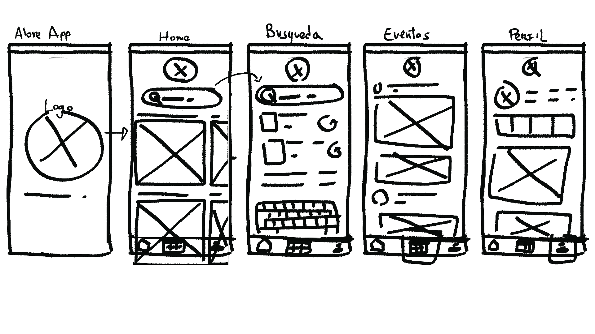

ViMu surge como respuesta a la brecha entre museos y posibles visitantes. Identificando la falta de información oportuna, confusión y dispersión de esta.
La meta de este proyecto era crear una plataforma en la que se unieran todos los museos e información sobre eventos en un solo medio y que esta fuese claro y de fácil acceso para los usuarios
PROCESO
ViMu está basado en el modelo del doble diamante y lean UX, pasando por múltiples fases de divergencia y convergencia.
OBTENER INFORMACIÓN
Esta etapa se enfoca en la divergencia y la recolección de información.
La primera fase incluye investigación de escritorio para identificar o confirmar problemas. En este caso, se identificó una disminución de aproximadamente un 90% en las visitas a museos post-pandemia.
La segunda fase consiste en entrevistas a usuarios y stakeholders para entender sus dolores, experiencias y expectativas.
INSIGHTS
Los insights se obtuvieron mediante la saturación de información de la investigación de escritorio, entrevistas y encuestas. Se analizaron y agruparon ideas clave, palabras y temáticas recurrentes, buscando conexiones entre ellas. Esto permitió identificar citas, nuevas problemáticas, formas de relacionarse con la cultura, lo que valoran los usuarios, los aspectos imprescindibles de la experiencia, su motivación principal para visitar museos y lo que marca la diferencia entre el interés y la asistencia.
Un museo se considera una forma didáctica y entretenida de aprender.
Un museo se considera interactivo cuando hacen al usuario participar de la experiencia de vivir el museo. Ejemplo: apretar botones, escuchar sonidos, movimientos, pantallas, etc.
Hay usuarios que perciben poca variedad en cuanto al contenido en museos por lo que no consideran necesario volver a asistir.
La cantidad de visitas/engagement en posts no se traducía en visitas reales por lo que la información no estaba llegando a suficientes personas o la información no era suficientemente motivadora como para visitar el museo.
USER PERSONA
La user persona se basó en la motivación principal de los entrevistados para asistir a los museos: "la curiosidad" y búsqueda de nuevos conocimientos
Rescatando expectativas, motivaciones y dolores secundarios asociados a este tipo de usuarios.
USER JOURNEY
Debido a que la mayoría de los usuarios se entera de los eventos disponibles en museos a través de RRSS, el user journey comienza con ese descubrimiento.
El user journey consta en el descubrimiento de un evento que ya sucedió y la búsqueda de un evento alterno que satisfaga la curiosidad despertada por el primero, búsqueda de un horario compatible, agendamiento, compra de entradas, llegada al evento y post-evento.
PROCESO
El proceso constó en una lluvia de ideas respecto a esta nueva aplicación, búsqueda de referentes y arquitectura de la aplicación combinándola con los flujos de usuario y card sorting; sketch de wireframes, prototipos de baja y alta fidelidad.
LLUVIA DE IDEAS
MOODBOARD
FLUJO
SKETCHING WIREFRAME
Esta técnica permite visualizar de manera rápida y sencilla la estructura de ña aplicación. A través de bocetos, se define la disposición de los elementos clave,
facilitando la comunicación de ideas y la toma de decisiones en las primeras etapas del desarrollo.

ALTA FIDELIDAD
Esta etapa se centró en jerarquizar la información y darle un foco principal a la aplicación: el descubrimiento de nuevos eventos por lo que el home se centró en presentar eventos similares a eventos anteriores a los que el usuario haya concurrido dejando en un segundo plano la búsqueda.
Debido a que no siempre se planea con tiempo a dónde ir, no sabremos si tendremos ganas mañana, se agregó una sección de eventos cercanos en caso de no tener un panorama planeado.
Como secciones extra se agregaron eventos/talleres/workshops gratuitos.
Se utilizó una tipografía regular con monoespaciado bajo un concepto de unidad, cultura, formalidad.
Se utilizó una paleta asociada a estos conceptos, agregando el conocimiento y el descubrimiento. Esta paleta se utilizó aplicando el 30-60-90.